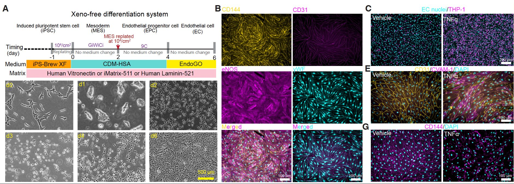

Differentiation
Robust cardiovascular cells in 2D and 3D
We develop protocols to generate cardiomyocytes, endothelial cells, epicardial cells, cardiac neural crest cells, cardiac smooth muscle cells, cardiac fibroblasts, and cardiac pericytes, as well as vessel organoids and vascularized cardiac organoids. A current priority is organoids that incorporate cardiomyocytes, vascular cells, and immune cells. For regenerative medicine, we are establishing xeno-free, chemically defined protocols that perform across diverse iPSC lines.
